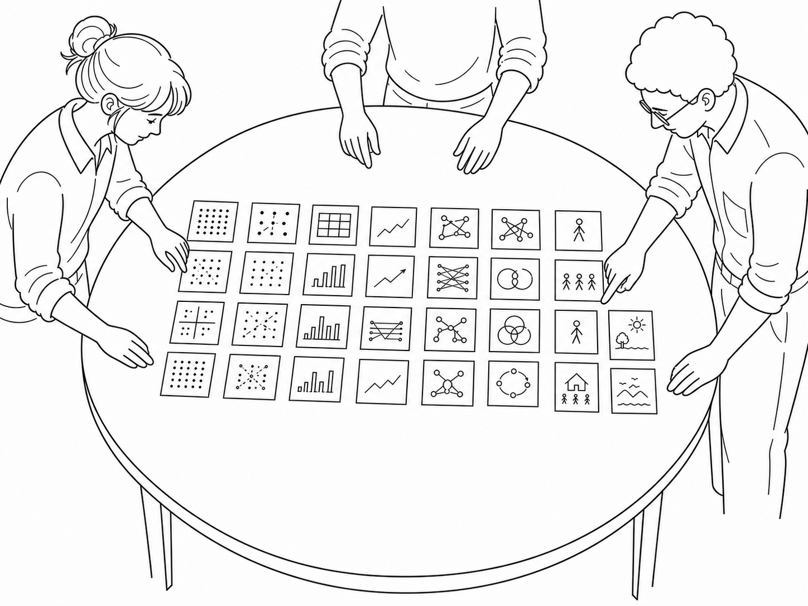
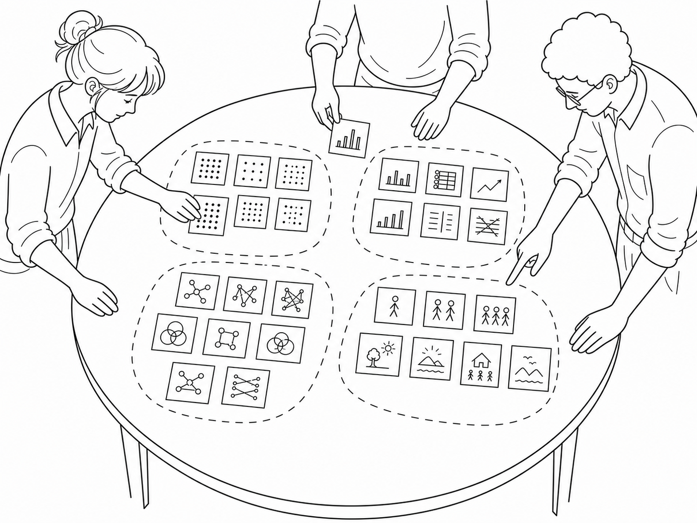
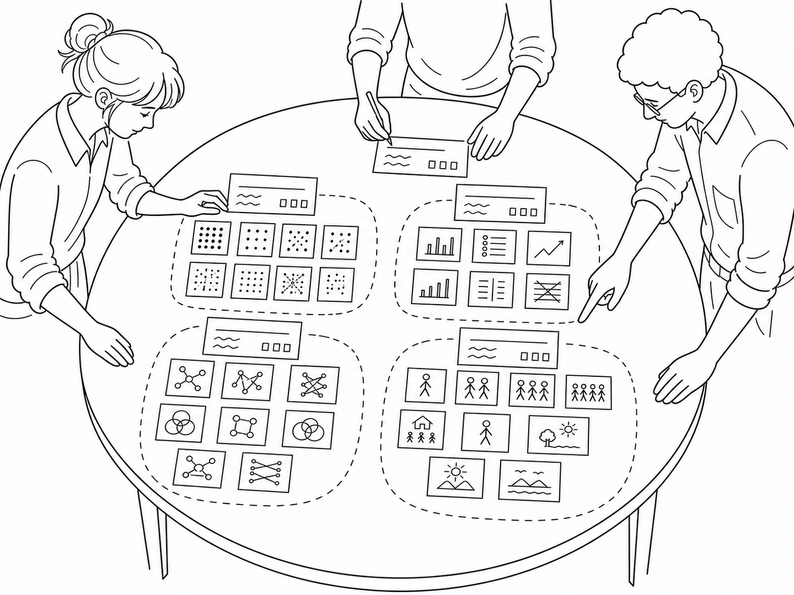
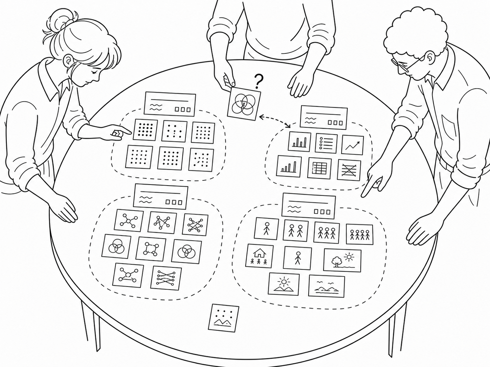

§ 01What it is.
Data sketching is a method for studying how people spontaneously visualize data when given only simple drawing materials. Participants are presented with a small, accessible dataset and asked to draw a visual representation of it. Researchers then collect the resulting sketches and analyze them together, through laying them out, grouping them, naming the groups, and reading the corpus as a single field of evidence.


The dataset, figures, and participant sketches reproduced on this page are from the supplemental materials of Walny, Huron & Carpendale (2015), reused under a CC BY 4.0 license. Original assets: supplemental-material.github.io/Data-Sketching.
§ 02Why use it.
Asking people to draw data, rather than only to talk about it, makes their thinking visible. A sketch is a record of the choices someone made: what to encode, what to leave out, and which relationships they judged worth showing. Because the materials are simple and familiar, participants need no software and no training, which keeps the barrier low and widens who can take part. Read as a corpus rather than one drawing at a time, the sketches reveal the range of representations a dataset invites, and where people converge or diverge.
§ 03How to do it.
Prepare a small, accessible dataset.
Choose data simple enough that anyone, including participants without statistical training, can read it in a single glance. The dataset should fit on one page. Provide it printed at the start of the session and leave it in front of every participant for reference. In the original study the data came from a 1974 psychology paper in which students rated how appropriate various behaviors were in various situations; each cell held the mean rating on a 0 to 9 scale, where 0 meant extremely inappropriate and 9 extremely appropriate (running in class, for instance, scored 2.52). Read one such cell aloud so the encoding is unambiguous before anyone starts drawing.

Collect freeform sketches of the dataset.
Give each participant a stack of plain A4 paper, pencils, and a generous range of colored pencils. Frame the task as open exploration rather than reproduction: tell them to represent the dataset on the blank sheets however they choose, that there is no wrong way to do it, and that they should draw the data as they explore it. Offer prompts they can think with: connections between pieces of data, ways to group it, similarities and differences, interesting patterns, and surprising findings. Because the full dataset is large, make clear they need not draw all of it and may focus on whatever parts they find interesting. Some sketches will include minimal annotations (labels, axes, captions); some will not. Both are valid. Explicitly state that there are no wrong responses.
Ask for a short written report alongside each sketch.
After sketching, ask participants to write a few sentences describing what they learned or found interesting about the data. This second artifact (the data report) becomes the triangulation source against the sketch when you analyze later.

Lay out the entire corpus.
Spread all sketches on a wall, a large table, or a digital board such as Miro. The whole collection must be visible at a glance. This synoptic view is what makes pattern-recognition across the corpus possible.

Build an affinity diagram. Group likes with likes.
Physically (or digitally) move sketches into clusters of resemblance. Do not pre-define categories. Let the groupings emerge. Multiple coders should work together; disagreement during this step is generative.

Name and describe each group.
For every cluster, write a working label and a short description of what makes that group cohesive. The first attempt rarely sticks; expect to rename and re-merge groups several times.

Stress-test the grouping. Trial and error.
Apply three checks at each iteration: Does every sketch fit somewhere? If sketches are forced into a category, the taxonomy is wrong. Can the coders agree? Disagreement marks a category that needs splitting or renaming. Are there recurring patterns? Patterns that survive multiple iterations are the strongest findings.

§ 04In practice.
The original study took place in a classroom with ample tables, good lighting, blank sheets of paper, and a large variety of colored pencils. Participants with varying degrees of visualization expertise were asked to sketch a small, easily understandable dataset and to write what they found interesting about it. They were explicitly told that there were no wrong responses.
The collected corpus revealed a continuum: from numerate sketches (essentially re-drawing the table) at one end, to highly abstract pictorial representations at the other. Critically, the participants whose sketches sat closer to the abstract end of the spectrum tended to write data reports with greater analytic depth, suggesting that the act of sketching abstractly is not merely a stylistic choice but is itself an analytic move.
The findings were an early contribution to understanding how people spontaneously sketch visual representations of data, with implications for visualization design, education, and tools that support the early, exploratory stages of visual data analysis.
Walny, J., Huron, S. & Carpendale, S. (2015) ‘An exploratory study of data sketching for visual representation’. Computer Graphics Forum, 34(3), 231–240. doi.org/10.1111/cgf.12635
@article{Walny_2015, title={An Exploratory Study of Data Sketching for Visual Representation}, volume={34}, ISSN={1467-8659}, url={http://dx.doi.org/10.1111/cgf.12635}, DOI={10.1111/cgf.12635}, number={3}, journal={Computer Graphics Forum}, publisher={Wiley}, author={Walny, J. and Huron, S. and Carpendale, S.}, year={2015}, month=June, pages={231–240} }
§ 05Ways to adapt it.
Try digital sketching on a tablet when remote sessions are necessary, but be aware that the medium changes what people draw: pencil-on-paper invites more exploration than a stylus on glass.
Submit way(s) to adapt it →§ 06Other research using this method.
To be added.
Submit other research using this method →